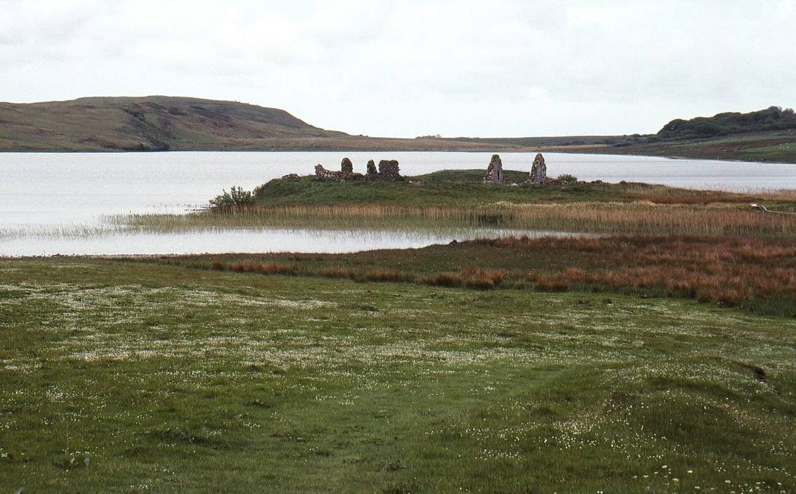
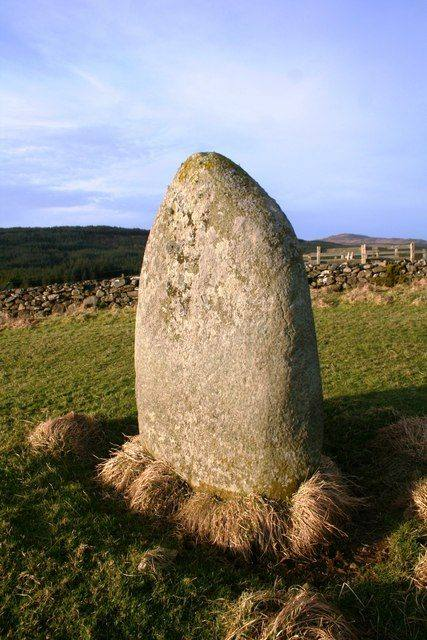

For about 400 years two little islands in Loch Finlaggan were the centre of power for the Lords of the Isles, the MacDonald chiefs descended from Somerled who ruled the Hebrides and much of the west coast.
A footbridge takes you over to Eilean Mòr, the big island, with its ruined chapel, medieval grave slabs and the outlines of the old halls. Beyond it is Eilean na Comhairle, the Council Isle, where the Lords held council.
James IV ended the Lordship at the end of the 1400s. The small visitor centre has finds from the excavations, a replica of the high cross and the story of Clan Donald.
The Finlaggan Trust →What it looks like


Photographs from Wikimedia Commons: Heikki Immonen, CC BY 3.0; Heikki Immonen, CC BY 3.0; Andrew Wood, CC BY-SA 2.0. Prices are 2026 figures in pounds, with rand at £1 = R22.19. Check before booking.